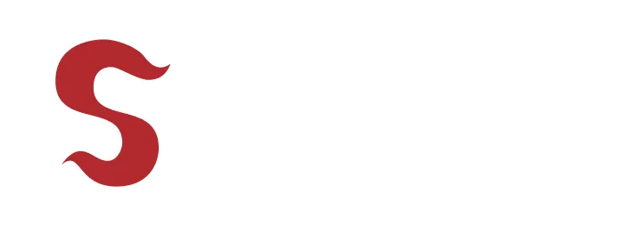
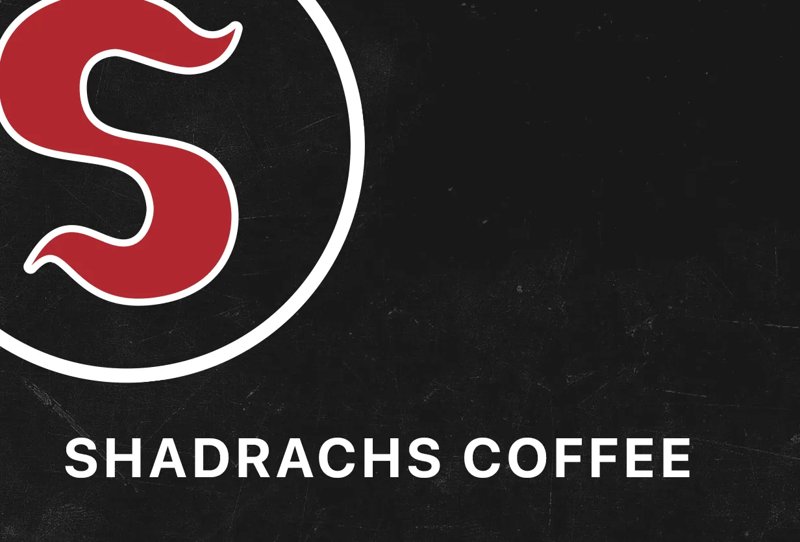
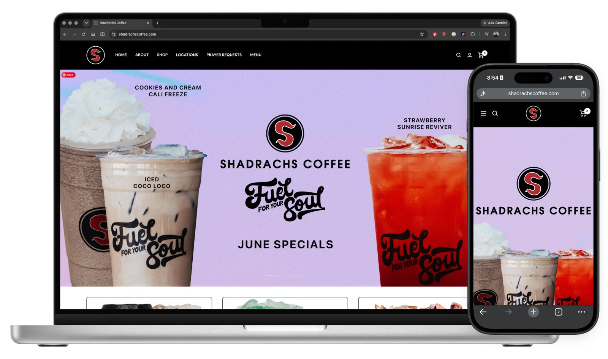
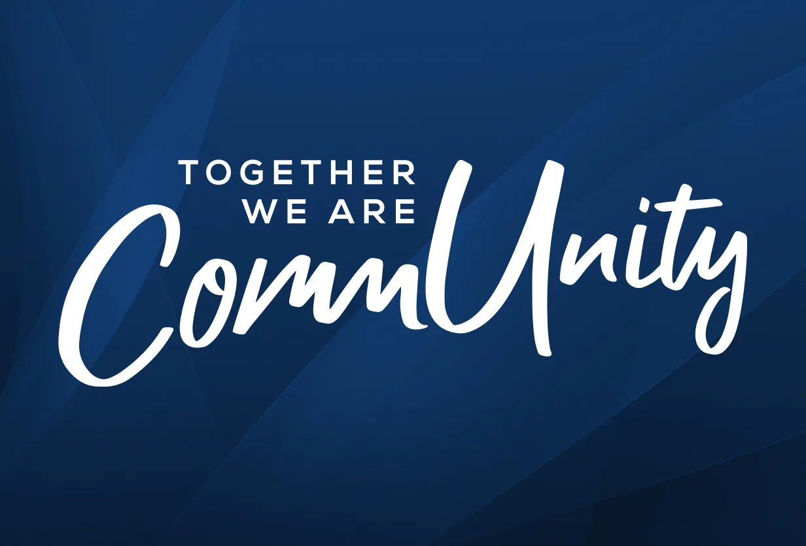
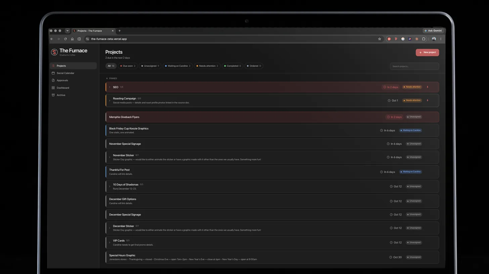
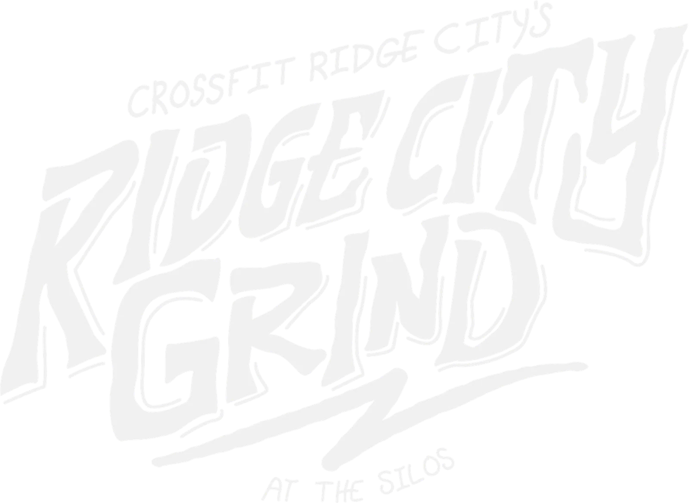
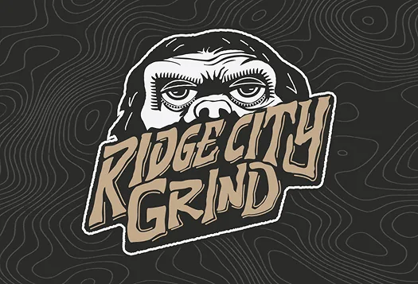
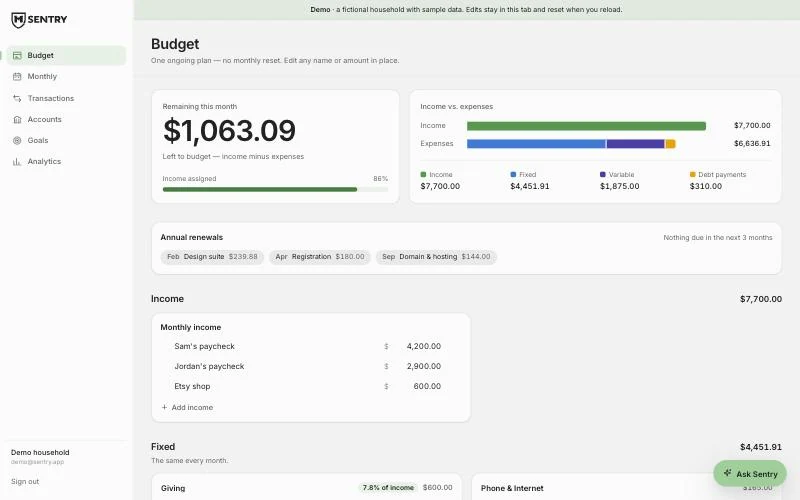

An ongoing, hand-lettered brand system for a specialty coffee company, built and run across every channel by a one-person creative team.

A WordPress-to-Shopify migration and full redesign for a growing coffee brand that had outgrown its digital presence.

Brand and campaign design for a regional health system: the Together We Are CommUnity campaign, a children's wing mural, and a 3D virtual fundraiser.

An internal command center for Shadrachs Coffee, one always-current source of truth for projects, social, and approvals. Designed and built end to end.


Brand identity and lettering for a 24-hour trail run through the Arkansas woods.

A manual-entry budgeting app I designed and built for my family, with an Ask Sentry AI assistant and a tax layer. Viewable demo on sample data.
